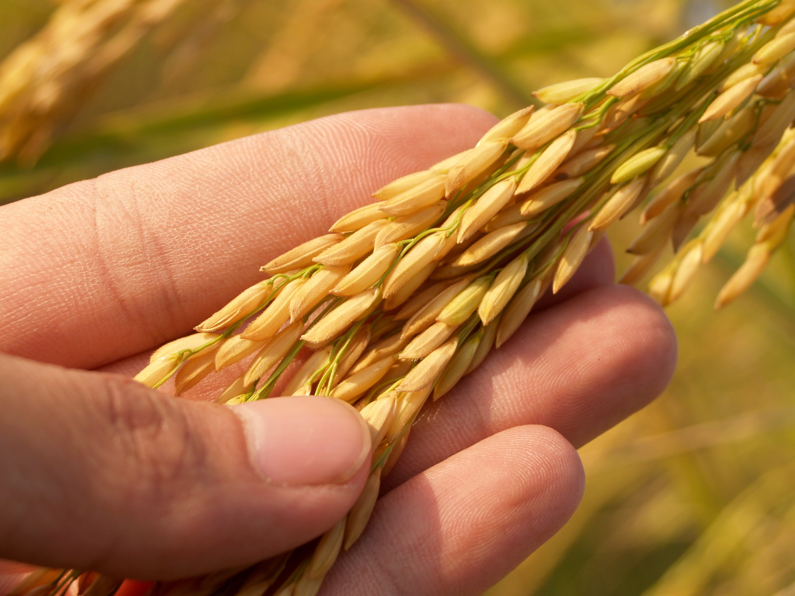
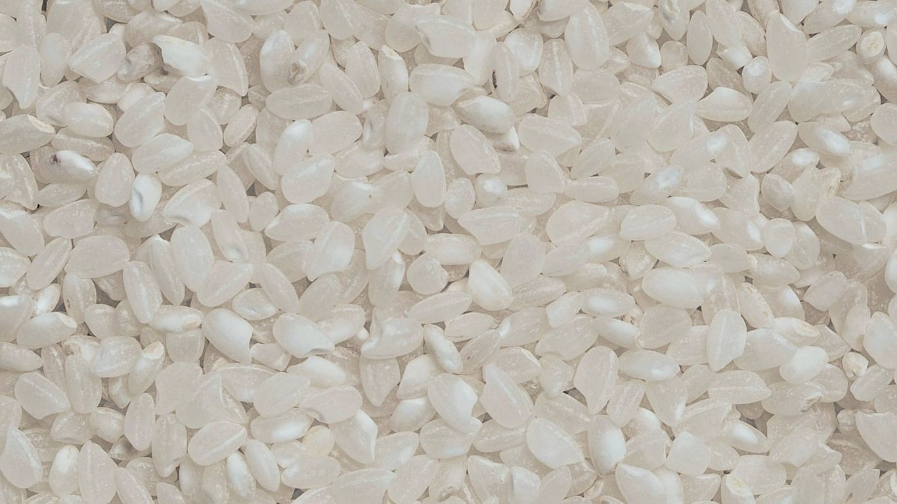
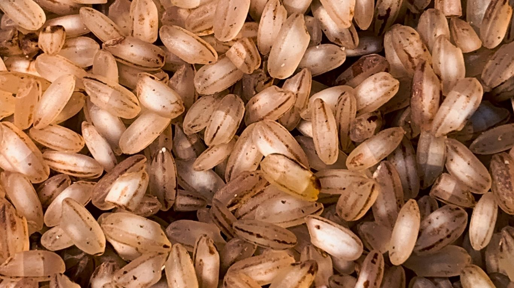
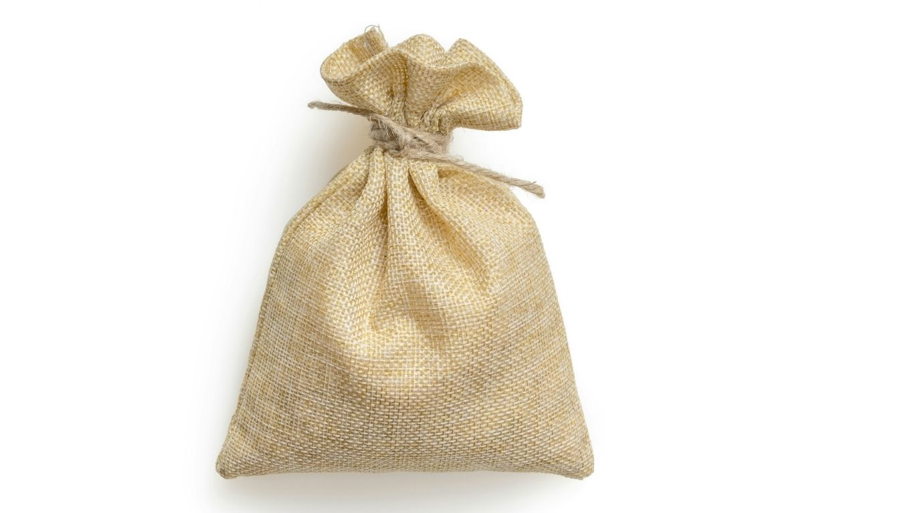

今年の田植えが今年も無事に終わりました！
恵みの雨の中、今年も元気な苗を植えることができました。これからの成長が楽しみです...
私たちの田んぼは、ため池密集地帯にあり、町面積の約12%をため池が占めています。この豊富なため池の水と、網目状に張り巡らされた「流溝（りゅうみぞ）」と呼ばれる水路網 を活用して、古くから稲作（米栽培）が盛んに行われています。また土づくりからこだわり、化学肥料を極力抑え、微生物の力を借りて稲本来の強さを引き出しています。
毎日食べるお米だからこそ、安心・安全で、炊き上がった瞬間に笑顔がこぼれるようなお米を目指して、日々愛情を注いでいます。


¥3,500 (税込)
当園で最もツヤと甘みが強い自慢の逸品です。

¥3,200 (税込)
ビタミン・ミネラル豊富で、ボソボソしない食べやすい玄米。

¥6,500 (税込)/月
精米したての一番美味しい状態でお届けします。
最初の水は、お米が糠（ぬか）の臭いを吸いやすい事があるので、注いだらすぐに捨ててください。ゴシゴシ研がず、優しくかき混ぜるように洗うのがコツです。
お米の芯まで水分を行き渡らせるため、夏場は30分、冬場は1時間以上水に浸してください。これでふっくら感が劇的に変わります。
炊飯が終わってもすぐに蓋を開けず、15分ほど蒸らします。その後、しゃもじで十の字に切り、底からひっくり返すように空気を含ませてほぐします。
恵みの雨の中、今年も元気な苗を植えることができました。これからの成長が楽しみです...
美味しいお米の基本はやっぱり土。私たちが毎年行っているこだわりの堆肥についてご紹介します...